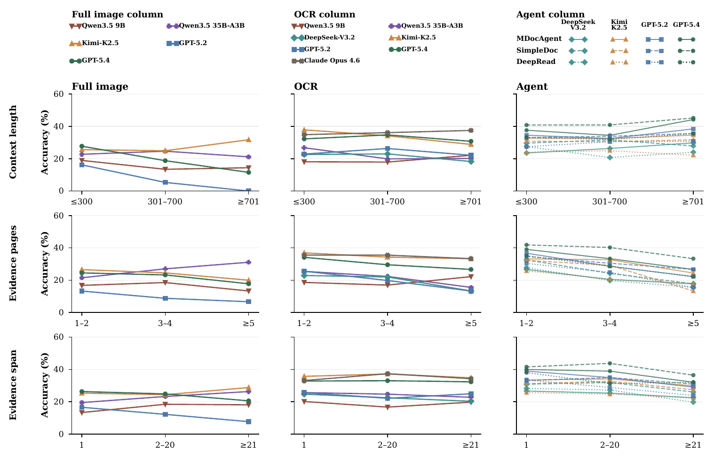
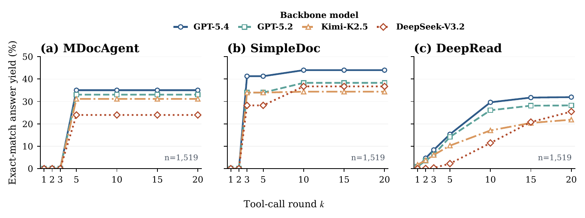
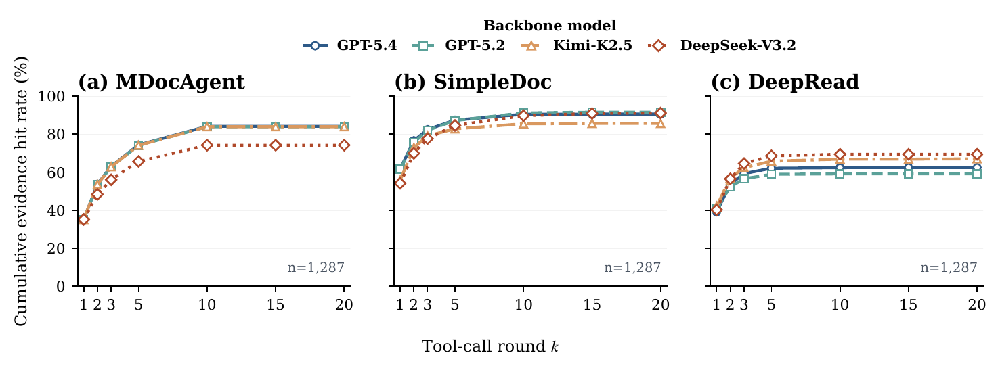

A human-verified benchmark for evidence-grounded reasoning across extra-long documents
Most document benchmarks test whether a model can answer. XL-DocBench also records where the answer comes from, what rule verifies it, and whether the available evidence is sufficient.
Questions verified end to end
Every retained item is re-answered by experts with full access to the source documents.
Professional-scale contexts
The median context is 211 pages, while the longest multi-document context spans 2,303 pages.
Evidence beyond one page
1,103 questions require evidence distributed across multiple pages.
Diagnostic reasoning types
Twelve labels separate retrieval, set tracking, rule following, and abstention failures.
Six professional domains, one evidence standard
Select a domain to inspect its coverage in the final human-verified benchmark.
Legal & Regulatory
Why page-level evidence matters
The same wrong answer can come from very different system failures.
A model may miss the required page, read the right page but ignore a table, combine only part of the support, or answer even though a required condition is absent. XL-DocBench stores evidence pages, supporting snippets, answer formats, and typed verification rules so these failures can be distinguished.
Locate
Search the complete document context.
Inspect
Read text, tables, charts, and figures.
Combine
Track all required support and exceptions.
Verify
Apply the typed rule or abstain.
From one page to 2,303 pages
Document QA has grown longer, but XL-DocBench also increases evidence dispersion, multimodal support, and cross-document scope.
Tree-guided synthesis, verified by 194 human experts
Models propose difficult candidates from document branches; people establish the final answer, evidence pages, supporting quotes, and verification rule.

Structure documents
Parse pages, text, tables, figures, and headings into a navigable tree.
Test branch dependency
Reject questions that remain answerable after a required branch is removed.
Refine and filter
Remove world-knowledge shortcuts, metadata leakage, weak support, and malformed answers.
Verify every item
Experts re-answer, mark exact pages and quotes, resolve ambiguity, and check the rule.
Current systems still fail on more than half of XL-DocBench
The strongest evaluated pipeline reaches 44.0% overall accuracy. Long windows help, but evidence selection and set tracking remain binding constraints.
A long window is not enough
Models with the same 1M-token window still differ at the same OCR budget.
Agents are not automatically better
With GPT-5.4, SimpleDoc reaches 44.0%, MDocAgent 35.0%, and DeepRead 32.2%.
Set tracking remains difficult
Best ranking, coverage, and set-difference accuracy stays below 37%.
Same final accuracy, different failure modes
Breakdowns by context length, evidence count, and evidence span reveal whether a system loses information because the input is long or because the required support is dispersed.

Context pressure
Direct readers degrade as irrelevant pages grow, even before hard context limits bind.
Evidence pressure
Questions requiring several support pages expose incomplete retrieval and set tracking.
Span pressure
Evidence separated by hundreds of pages is harder to keep active and reconcile.
Retrieval is not the same as a correct answer
Evidence-hit curves and answer-yield curves separate page-search failures from evidence-use and rule-following failures.


Inside a human-verified example
Each case exposes the question, evidence scope, reasoning type, and expert-verified support rather than showing only a final answer.
Cross-document temporal reasoning

Benchmark leaderboard across 27 evaluated systems
Filter by system family or inspect the full twelve-type reasoning breakdown. All scores come from the same deterministic evaluator and expert-verified ground truth.
Best values in the selected view are highlighted in red; second-best values are blue. Failed, missing, and unparsable predictions count as incorrect.